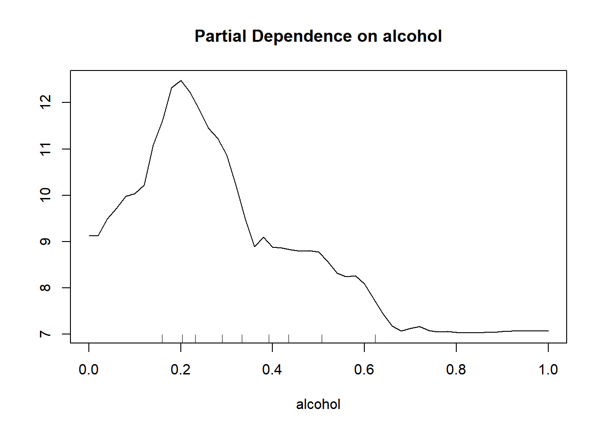
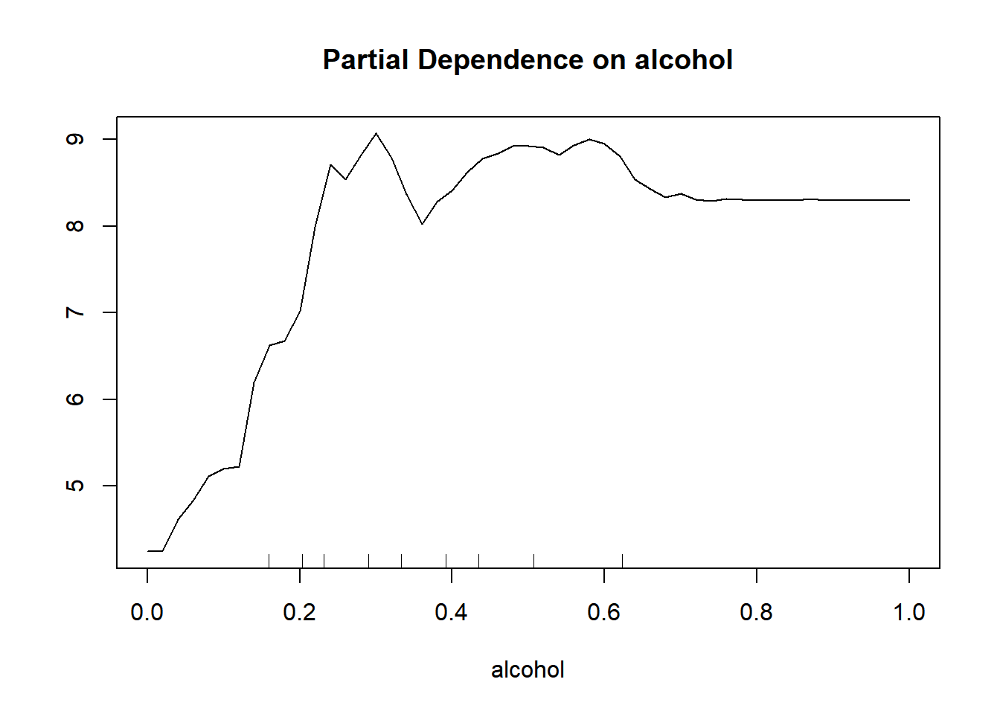
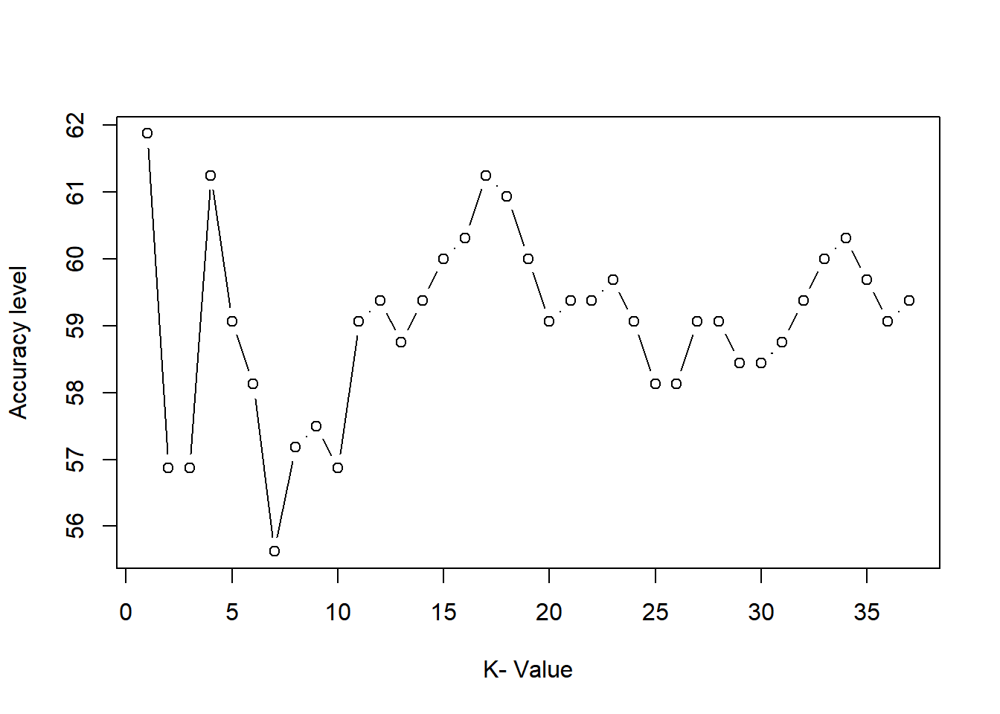

Chapter 13 Partial Dependence Plots
Produces partial plot for alcohol in training set data/rf model for classication 5 aka quality =5.
partialPlot(rf, train, alcohol, 5)
This plot tells u that when alcohol is less than 11% it predicts classification 5 more strongly than when it is greater than 11%.
partialPlot(rf, train, alcohol, 7)
This plot tells us that when alcohol is greater than 10% it predicts classification 7 more strongly than when it is less than 10%.
13.1 Introduction
Just planning to use this file to walk through some tutorials of k-means clustering I found.
13.2 Load Data
We have taken a data-set from Kaggle: https://www.kaggle.com/uciml/red-wine-quality-cortez-et-al-2009 This data-set inlcudes the measurements from the wine along with its quality rating.
wine<-read.table("data/winequality-red.csv",stringsAsFactors = FALSE,
sep=",",header = TRUE)
head(wine)## fixed.acidity volatile.acidity citric.acid residual.sugar chlorides free.sulfur.dioxide total.sulfur.dioxide density pH sulphates alcohol
## 1 7.4 0.70 0.00 1.9 0.076 11 34 0.9978 3.51 0.56 9.4
## 2 7.8 0.88 0.00 2.6 0.098 25 67 0.9968 3.20 0.68 9.8
## 3 7.8 0.76 0.04 2.3 0.092 15 54 0.9970 3.26 0.65 9.8
## 4 11.2 0.28 0.56 1.9 0.075 17 60 0.9980 3.16 0.58 9.8
## 5 7.4 0.70 0.00 1.9 0.076 11 34 0.9978 3.51 0.56 9.4
## 6 7.4 0.66 0.00 1.8 0.075 13 40 0.9978 3.51 0.56 9.4
## quality
## 1 5
## 2 5
## 3 5
## 4 6
## 5 5
## 6 513.3 Clean and Normalize the data.
Our dataset already contains only predictive values and output, so we do not need to remove any descriptive columns. We must normalize the values within the dataset to avoid any bias and remove the output variable (quality) since it’s the prediction.
#Normalization
normalize <- function(x) {
return ((x - min(x)) / (max(x) - min(x))) }
wine.normal <- as.data.frame(lapply(wine[,1:11], normalize))
head(wine.normal)## fixed.acidity volatile.acidity citric.acid residual.sugar chlorides free.sulfur.dioxide total.sulfur.dioxide density pH sulphates
## 1 0.2477876 0.3972603 0.00 0.06849315 0.1068447 0.1408451 0.09893993 0.5675477 0.6062992 0.1377246
## 2 0.2831858 0.5205479 0.00 0.11643836 0.1435726 0.3380282 0.21554770 0.4941263 0.3622047 0.2095808
## 3 0.2831858 0.4383562 0.04 0.09589041 0.1335559 0.1971831 0.16961131 0.5088106 0.4094488 0.1916168
## 4 0.5840708 0.1095890 0.56 0.06849315 0.1051753 0.2253521 0.19081272 0.5822320 0.3307087 0.1497006
## 5 0.2477876 0.3972603 0.00 0.06849315 0.1068447 0.1408451 0.09893993 0.5675477 0.6062992 0.1377246
## 6 0.2477876 0.3698630 0.00 0.06164384 0.1051753 0.1690141 0.12014134 0.5675477 0.6062992 0.1377246
## alcohol
## 1 0.1538462
## 2 0.2153846
## 3 0.2153846
## 4 0.2153846
## 5 0.1538462
## 6 0.153846213.4 Data Splice
Since our data-set our research question involves prediction will will randomly select a portion of data to use for overall effectiveness measurement. We plan to save about \(5\%\) of the data for testing which ends up being \(80\) values.
set.seed(123)
dat.d <- sample(1:nrow(wine.normal),size=nrow(wine.normal)*0.8,replace = FALSE) #random selection of 90% data.
train.wine <- wine.normal[dat.d,] # 90% training data
test.wine <- wine.normal[-dat.d,] # remaining 10% test data
#Creating seperate dataframe for 'Quality' feature which is our target.
train.quality_label <- wine[dat.d,12]
test.quality_label <-wine[-dat.d,12]Next, we’re going to calculate the number of observations in the training data set. The reason we’re doing this is that we want to initialize the value of ‘K’ in the KNN model. One of the ways to find the optimal K value is to calculate the square root of the total number of observations in the data set. This square root will give you the ‘K’ value.
NROW(train.quality_label) ## [1] 1279sqrt(NROW(train.quality_label) )## [1] 35.76311The square root of 1493 is around 35.7 we’ll create a model with a ‘K’ value as 36.
knn.36 <- knn(train=train.wine, test=test.wine, cl=train.quality_label, k=36)13.5 Model Evaluation
#Calculate the proportion of correct classification for k =37
ACC.36 <- 100 * sum(test.quality_label == knn.36)/NROW(test.quality_label)
ACC.36## [1] 58.4375As shown above, the accuracy for K = 36 is 58.435
13.6 Optimization
i=1
k.optm=1
for (i in 1:37){
knn.mod <- knn(train=train.wine, test=test.wine, cl=train.quality_label, k=i)
k.optm[i] <- 100 * sum(test.quality_label == knn.mod)/NROW(test.quality_label)
k=i
cat(k,'=',k.optm[i],'')
}## 1 = 61.875 2 = 56.875 3 = 56.875 4 = 61.25 5 = 59.0625 6 = 58.125 7 = 55.625 8 = 57.1875 9 = 57.5 10 = 56.875 11 = 59.0625 12 = 59.375 13 = 58.75 14 = 59.375 15 = 60 16 = 60.3125 17 = 61.25 18 = 60.9375 19 = 60 20 = 59.0625 21 = 59.375 22 = 59.375 23 = 59.6875 24 = 59.0625 25 = 58.125 26 = 58.125 27 = 59.0625 28 = 59.0625 29 = 58.4375 30 = 58.4375 31 = 58.75 32 = 59.375 33 = 60 34 = 60.3125 35 = 59.6875 36 = 59.0625 37 = 59.375#Accuracy plot
plot(k.optm, type="b", xlab="K- Value",ylab="Accuracy level")
13.7 Load Data
We have taken a data-set from Kaggle: https://www.kaggle.com/uciml/red-wine-quality-cortez-et-al-2009 This data-set inlcudes the measurements from the wine along with its quality rating.
wine<-read.table("data/winequality-red.csv",stringsAsFactors = FALSE,
sep=",",header = TRUE)
glimpse(wine)## Rows: 1,599
## Columns: 12
## $ fixed.acidity <dbl> 7.4, 7.8, 7.8, 11.2, 7.4, 7.4, 7.9, 7.3, 7.8, 7.5, 6.7, 7.5, 5.6, 7.8, 8.9, 8.9, 8.5, 8.1, 7.4, 7.9, 8.9, 7.6, 7.9, ~
## $ volatile.acidity <dbl> 0.700, 0.880, 0.760, 0.280, 0.700, 0.660, 0.600, 0.650, 0.580, 0.500, 0.580, 0.500, 0.615, 0.610, 0.620, 0.620, 0.28~
## $ citric.acid <dbl> 0.00, 0.00, 0.04, 0.56, 0.00, 0.00, 0.06, 0.00, 0.02, 0.36, 0.08, 0.36, 0.00, 0.29, 0.18, 0.19, 0.56, 0.28, 0.08, 0.~
## $ residual.sugar <dbl> 1.9, 2.6, 2.3, 1.9, 1.9, 1.8, 1.6, 1.2, 2.0, 6.1, 1.8, 6.1, 1.6, 1.6, 3.8, 3.9, 1.8, 1.7, 4.4, 1.8, 1.8, 2.3, 1.6, 2~
## $ chlorides <dbl> 0.076, 0.098, 0.092, 0.075, 0.076, 0.075, 0.069, 0.065, 0.073, 0.071, 0.097, 0.071, 0.089, 0.114, 0.176, 0.170, 0.09~
## $ free.sulfur.dioxide <dbl> 11, 25, 15, 17, 11, 13, 15, 15, 9, 17, 15, 17, 16, 9, 52, 51, 35, 16, 6, 17, 29, 23, 10, 9, 21, 11, 4, 10, 14, 8, 17~
## $ total.sulfur.dioxide <dbl> 34, 67, 54, 60, 34, 40, 59, 21, 18, 102, 65, 102, 59, 29, 145, 148, 103, 56, 29, 56, 60, 71, 37, 67, 40, 23, 11, 37,~
## $ density <dbl> 0.9978, 0.9968, 0.9970, 0.9980, 0.9978, 0.9978, 0.9964, 0.9946, 0.9968, 0.9978, 0.9959, 0.9978, 0.9943, 0.9974, 0.99~
## $ pH <dbl> 3.51, 3.20, 3.26, 3.16, 3.51, 3.51, 3.30, 3.39, 3.36, 3.35, 3.28, 3.35, 3.58, 3.26, 3.16, 3.17, 3.30, 3.11, 3.38, 3.~
## $ sulphates <dbl> 0.56, 0.68, 0.65, 0.58, 0.56, 0.56, 0.46, 0.47, 0.57, 0.80, 0.54, 0.80, 0.52, 1.56, 0.88, 0.93, 0.75, 1.28, 0.50, 1.~
## $ alcohol <dbl> 9.4, 9.8, 9.8, 9.8, 9.4, 9.4, 9.4, 10.0, 9.5, 10.5, 9.2, 10.5, 9.9, 9.1, 9.2, 9.2, 10.5, 9.3, 9.0, 9.2, 9.4, 9.7, 9.~
## $ quality <int> 5, 5, 5, 6, 5, 5, 5, 7, 7, 5, 5, 5, 5, 5, 5, 5, 7, 5, 4, 6, 6, 5, 5, 5, 6, 5, 5, 5, 5, 6, 5, 6, 5, 6, 5, 6, 6, 7, 4,~13.8 Process Reference
The process was followed from this site: https://www.pluralsight.com/guides/linear-lasso-and-ridge-regression-with-r
13.9 Data Partitioning
The below code takes 70% of the data for training and 30% of the code for testing.
set.seed(100)
index = sample(1:nrow(wine), 0.7*nrow(wine))
train = wine[index,] # Create the training data
test = wine[-index,] # Create the test data
dim(train)## [1] 1119 12dim(test)## [1] 480 1213.10 Scaling the Numeric Features
cols <- colnames(wine)
pre_proc_val <- preProcess(train[,cols], method = c("center", "scale"))
train[,cols] = predict(pre_proc_val, train[,cols])
test[,cols] = predict(pre_proc_val, test[,cols])
summary(train)## fixed.acidity volatile.acidity citric.acid residual.sugar chlorides free.sulfur.dioxide total.sulfur.dioxide
## Min. :-2.0802 Min. :-2.26583 Min. :-1.37809 Min. :-1.18596 Min. :-1.58727 Min. :-1.4109 Min. :-1.2446
## 1st Qu.:-0.6928 1st Qu.:-0.76458 1st Qu.:-0.92192 1st Qu.:-0.45565 1st Qu.:-0.36546 1st Qu.:-0.8446 1st Qu.:-0.7471
## Median :-0.2304 Median :-0.04176 Median :-0.06029 Median :-0.23655 Median :-0.15480 Median :-0.1840 Median :-0.2496
## Mean : 0.0000 Mean : 0.00000 Mean : 0.00000 Mean : 0.00000 Mean : 0.00000 Mean : 0.0000 Mean : 0.0000
## 3rd Qu.: 0.5790 3rd Qu.: 0.62546 3rd Qu.: 0.80135 3rd Qu.: 0.05557 3rd Qu.: 0.05586 3rd Qu.: 0.5710 3rd Qu.: 0.4656
## Max. : 4.1630 Max. : 5.85201 Max. : 3.69037 Max. : 9.47663 Max. :11.03109 Max. : 5.2899 Max. : 7.5552
## density pH sulphates alcohol quality
## Min. :-3.57012 Min. :-3.68218 Min. :-1.8820 Min. :-1.9054 Min. :-3.3046
## 1st Qu.:-0.61381 1st Qu.:-0.66652 1st Qu.:-0.6199 1st Qu.:-0.8694 1st Qu.:-0.7831
## Median :-0.01507 Median :-0.02489 Median :-0.2183 Median :-0.2101 Median : 0.4777
## Mean : 0.00000 Mean : 0.00000 Mean : 0.0000 Mean : 0.0000 Mean : 0.0000
## 3rd Qu.: 0.57566 3rd Qu.: 0.55258 3rd Qu.: 0.4127 3rd Qu.: 0.5747 3rd Qu.: 0.4777
## Max. : 3.71106 Max. : 4.46653 Max. : 7.6982 Max. : 3.3687 Max. : 2.999313.11 Linear Regression
13.11.1 What is it?
The simplest form of regression is linear regression, which assumes that the predictors have a linear relationship with the target variable. ### Assumptions * Input is assumed to have a Normal distribution and are not correlated with each other.
We saw in the Descriptive Stats section that this was not the case
With these assumptions being true we can model quality witht the following equation.
\[ q = a_1x_1 + a_2x_2 + a_3x_3 + \dots + a_2nx_n + b\] Where \(a_1, a_2, \dots, a_n\) are coefficients from the model. \(x_1, x_2, \dots, x_n\) are the input variables to the model. \(b\) is a factor of the model and \(q\) is equal to the quality output.
13.11.2 Single Variable
In the code-block below we output the summary of just the measurement alchol into the linear model.
summary(lm(quality~alcohol, data = train))##
## Call:
## lm(formula = quality ~ alcohol, data = train)
##
## Residuals:
## Min 1Q Median 3Q Max
## -3.5773 -0.4885 -0.2049 0.6305 3.2938
##
## Coefficients:
## Estimate Std. Error t value Pr(>|t|)
## (Intercept) 5.845e-16 2.587e-02 0.0 1
## alcohol 5.019e-01 2.588e-02 19.4 <2e-16 ***
## ---
## Signif. codes: 0 '***' 0.001 '**' 0.01 '*' 0.05 '.' 0.1 ' ' 1
##
## Residual standard error: 0.8653 on 1117 degrees of freedom
## Multiple R-squared: 0.252, Adjusted R-squared: 0.2513
## F-statistic: 376.2 on 1 and 1117 DF, p-value: < 2.2e-16Focusing on the p-value above we can tell that it is unlikely that by chance we will observe a relationship between alcohol and quality.
13.11.3 Multiple Variables
In the code block below we will input all of the variables and examine the output.
lr <- lm(quality~fixed.acidity + volatile.acidity + citric.acid + residual.sugar + chlorides + free.sulfur.dioxide + density + pH + sulphates + alcohol, data = train)
summary(lr)##
## Call:
## lm(formula = quality ~ fixed.acidity + volatile.acidity + citric.acid +
## residual.sugar + chlorides + free.sulfur.dioxide + density +
## pH + sulphates + alcohol, data = train)
##
## Residuals:
## Min 1Q Median 3Q Max
## -3.2099 -0.4497 -0.0791 0.5241 2.5651
##
## Coefficients:
## Estimate Std. Error t value Pr(>|t|)
## (Intercept) -1.898e-15 2.383e-02 0.000 1.00000
## fixed.acidity 1.248e-01 6.537e-02 1.910 0.05645 .
## volatile.acidity -2.657e-01 3.093e-02 -8.589 < 2e-16 ***
## citric.acid -9.537e-02 4.006e-02 -2.381 0.01744 *
## residual.sugar 5.473e-02 3.099e-02 1.766 0.07761 .
## chlorides -9.002e-02 2.936e-02 -3.066 0.00222 **
## free.sulfur.dioxide -4.450e-02 2.517e-02 -1.768 0.07737 .
## density -9.071e-02 5.979e-02 -1.517 0.12948
## pH -4.245e-02 4.281e-02 -0.992 0.32162
## sulphates 1.813e-01 2.888e-02 6.279 4.87e-10 ***
## alcohol 3.934e-01 4.120e-02 9.548 < 2e-16 ***
## ---
## Signif. codes: 0 '***' 0.001 '**' 0.01 '*' 0.05 '.' 0.1 ' ' 1
##
## Residual standard error: 0.7972 on 1108 degrees of freedom
## Multiple R-squared: 0.3701, Adjusted R-squared: 0.3644
## F-statistic: 65.1 on 10 and 1108 DF, p-value: < 2.2e-16Reviewing the output we find that the inputs: ‘volatile.acidity,’ ‘sulphates,’ and ‘alcohol.’
13.12 Regularization
Linear regression algorithm works by selecting coefficients for each independent variable that minimizes a loss function. However, if the coefficients are large, they can lead to over-fitting on the training dataset, and such a model will not generalize well on the unseen test data. To overcome this shortcoming, we’ll do regularization, which penalizes large coefficients. The following sections of the guide will discuss various regularization algorithms.
We will be using the glmnet() package to build the regularized regression models. The glmnet function does not work with dataframes, so we need to create a numeric matrix for the training features and a vector of target values.
The lines of code below perform the task of creating model matrix using the dummyVars function from the caret package. The predict function is then applied to create numeric model matrices for training and test.
dummies <- dummyVars(quality~., data = wine)
train_dummies = predict(dummies, newdata = train)
test_dummies = predict(dummies, newdata = test)
print(dim(train_dummies)); print(dim(test_dummies))## [1] 1119 11## [1] 480 1113.13 Ridge Regression
Ridge regression is an extension of linear regression where the loss function is modified to minimize the complexity of the model. This modification is done by adding a penalty parameter that is equivalent to the square of the magnitude of the coefficients.
eval_results <- function(true, predicted, df) {
SSE <- sum((predicted - true)^2)
SST <- sum((true - mean(true))^2)
R_square <- 1 - SSE / SST
RMSE = sqrt(SSE/nrow(df))
# Model performance metrics
data.frame(
RMSE = RMSE,
Rsquare = R_square
)
}x = as.matrix(train_dummies)
y_train = train$quality
x_test = as.matrix(test_dummies)
y_test = test$unemploy
lambdas <- 10^seq(2, -3, by = -.1)
ridge_reg = glmnet(x, y_train, nlambda = 25, alpha = 0, family = 'gaussian', lambda = lambdas)
summary(ridge_reg)## Length Class Mode
## a0 51 -none- numeric
## beta 561 dgCMatrix S4
## df 51 -none- numeric
## dim 2 -none- numeric
## lambda 51 -none- numeric
## dev.ratio 51 -none- numeric
## nulldev 1 -none- numeric
## npasses 1 -none- numeric
## jerr 1 -none- numeric
## offset 1 -none- logical
## call 7 -none- call
## nobs 1 -none- numericcv_ridge <- cv.glmnet(x, y_train, alpha = 0, lambda = lambdas)
optimal_lambda <- cv_ridge$lambda.min
optimal_lambda## [1] 0.0501187213.14 Lasso Regression
lambdas <- 10^seq(2, -3, by = -.1)
# Setting alpha = 1 implements lasso regression
lasso_reg <- cv.glmnet(x, y_train, alpha = 1, lambda = lambdas, standardize = TRUE, nfolds = 5)
# Best
lambda_best <- lasso_reg$lambda.min
lambda_best## [1] 0.001995262lasso_model <- glmnet(x, y_train, alpha = 1, lambda = lambda_best, standardize = TRUE)
predictions_train <- predict(lasso_model, s = lambda_best, newx = x)
eval_results(y_train, predictions_train, train)## RMSE Rsquare
## 1 0.7898025 0.3756541predictions_test <- predict(lasso_model, s = lambda_best, newx = x_test)
eval_results(y_test, predictions_test, test)## Warning in mean.default(true): argument is not numeric or logical: returning NA## RMSE Rsquare
## 1 0 NaN13.14.1 Features of the ‘glmnet’ Package
\(\lambda\) is defined once and \(\alpha\) where lasso is scaled by \(\alpha\) and ridge penalty is scaled by \((1-\alpha\)).
13.14.2 Elastic Net Regression
Elastic net regression combines the properties of ridge and lasso regression
# Set training control
train_cont <- trainControl(method = "repeatedcv",
number = 10,
repeats = 5,
search = "random",
verboseIter = TRUE)
# Train the model
elastic_reg <- train(quality ~ .,
data = train,
method = "glmnet",
preProcess = c("center", "scale"),
tuneLength = 10,
trControl = train_cont)## + Fold01.Rep1: alpha=0.4004, lambda=0.002439
## - Fold01.Rep1: alpha=0.4004, lambda=0.002439
## + Fold01.Rep1: alpha=0.1857, lambda=1.109010
## - Fold01.Rep1: alpha=0.1857, lambda=1.109010
## + Fold01.Rep1: alpha=0.9054, lambda=0.120703
## - Fold01.Rep1: alpha=0.9054, lambda=0.120703
## + Fold01.Rep1: alpha=0.5759, lambda=1.247636
## - Fold01.Rep1: alpha=0.5759, lambda=1.247636
## + Fold01.Rep1: alpha=0.2560, lambda=0.003753
## - Fold01.Rep1: alpha=0.2560, lambda=0.003753
## + Fold01.Rep1: alpha=0.7879, lambda=0.195914
## - Fold01.Rep1: alpha=0.7879, lambda=0.195914
## + Fold01.Rep1: alpha=0.4018, lambda=0.086926
## - Fold01.Rep1: alpha=0.4018, lambda=0.086926
## + Fold01.Rep1: alpha=0.1517, lambda=1.159105
## - Fold01.Rep1: alpha=0.1517, lambda=1.159105
## + Fold01.Rep1: alpha=0.3660, lambda=0.692297
## - Fold01.Rep1: alpha=0.3660, lambda=0.692297
## + Fold01.Rep1: alpha=0.2080, lambda=0.003654
## - Fold01.Rep1: alpha=0.2080, lambda=0.003654
## + Fold02.Rep1: alpha=0.4004, lambda=0.002439
## - Fold02.Rep1: alpha=0.4004, lambda=0.002439
## + Fold02.Rep1: alpha=0.1857, lambda=1.109010
## - Fold02.Rep1: alpha=0.1857, lambda=1.109010
## + Fold02.Rep1: alpha=0.9054, lambda=0.120703
## - Fold02.Rep1: alpha=0.9054, lambda=0.120703
## + Fold02.Rep1: alpha=0.5759, lambda=1.247636
## - Fold02.Rep1: alpha=0.5759, lambda=1.247636
## + Fold02.Rep1: alpha=0.2560, lambda=0.003753
## - Fold02.Rep1: alpha=0.2560, lambda=0.003753
## + Fold02.Rep1: alpha=0.7879, lambda=0.195914
## - Fold02.Rep1: alpha=0.7879, lambda=0.195914
## + Fold02.Rep1: alpha=0.4018, lambda=0.086926
## - Fold02.Rep1: alpha=0.4018, lambda=0.086926
## + Fold02.Rep1: alpha=0.1517, lambda=1.159105
## - Fold02.Rep1: alpha=0.1517, lambda=1.159105
## + Fold02.Rep1: alpha=0.3660, lambda=0.692297
## - Fold02.Rep1: alpha=0.3660, lambda=0.692297
## + Fold02.Rep1: alpha=0.2080, lambda=0.003654
## - Fold02.Rep1: alpha=0.2080, lambda=0.003654
## + Fold03.Rep1: alpha=0.4004, lambda=0.002439
## - Fold03.Rep1: alpha=0.4004, lambda=0.002439
## + Fold03.Rep1: alpha=0.1857, lambda=1.109010
## - Fold03.Rep1: alpha=0.1857, lambda=1.109010
## + Fold03.Rep1: alpha=0.9054, lambda=0.120703
## - Fold03.Rep1: alpha=0.9054, lambda=0.120703
## + Fold03.Rep1: alpha=0.5759, lambda=1.247636
## - Fold03.Rep1: alpha=0.5759, lambda=1.247636
## + Fold03.Rep1: alpha=0.2560, lambda=0.003753
## - Fold03.Rep1: alpha=0.2560, lambda=0.003753
## + Fold03.Rep1: alpha=0.7879, lambda=0.195914
## - Fold03.Rep1: alpha=0.7879, lambda=0.195914
## + Fold03.Rep1: alpha=0.4018, lambda=0.086926
## - Fold03.Rep1: alpha=0.4018, lambda=0.086926
## + Fold03.Rep1: alpha=0.1517, lambda=1.159105
## - Fold03.Rep1: alpha=0.1517, lambda=1.159105
## + Fold03.Rep1: alpha=0.3660, lambda=0.692297
## - Fold03.Rep1: alpha=0.3660, lambda=0.692297
## + Fold03.Rep1: alpha=0.2080, lambda=0.003654
## - Fold03.Rep1: alpha=0.2080, lambda=0.003654
## + Fold04.Rep1: alpha=0.4004, lambda=0.002439
## - Fold04.Rep1: alpha=0.4004, lambda=0.002439
## + Fold04.Rep1: alpha=0.1857, lambda=1.109010
## - Fold04.Rep1: alpha=0.1857, lambda=1.109010
## + Fold04.Rep1: alpha=0.9054, lambda=0.120703
## - Fold04.Rep1: alpha=0.9054, lambda=0.120703
## + Fold04.Rep1: alpha=0.5759, lambda=1.247636
## - Fold04.Rep1: alpha=0.5759, lambda=1.247636
## + Fold04.Rep1: alpha=0.2560, lambda=0.003753
## - Fold04.Rep1: alpha=0.2560, lambda=0.003753
## + Fold04.Rep1: alpha=0.7879, lambda=0.195914
## - Fold04.Rep1: alpha=0.7879, lambda=0.195914
## + Fold04.Rep1: alpha=0.4018, lambda=0.086926
## - Fold04.Rep1: alpha=0.4018, lambda=0.086926
## + Fold04.Rep1: alpha=0.1517, lambda=1.159105
## - Fold04.Rep1: alpha=0.1517, lambda=1.159105
## + Fold04.Rep1: alpha=0.3660, lambda=0.692297
## - Fold04.Rep1: alpha=0.3660, lambda=0.692297
## + Fold04.Rep1: alpha=0.2080, lambda=0.003654
## - Fold04.Rep1: alpha=0.2080, lambda=0.003654
## + Fold05.Rep1: alpha=0.4004, lambda=0.002439
## - Fold05.Rep1: alpha=0.4004, lambda=0.002439
## + Fold05.Rep1: alpha=0.1857, lambda=1.109010
## - Fold05.Rep1: alpha=0.1857, lambda=1.109010
## + Fold05.Rep1: alpha=0.9054, lambda=0.120703
## - Fold05.Rep1: alpha=0.9054, lambda=0.120703
## + Fold05.Rep1: alpha=0.5759, lambda=1.247636
## - Fold05.Rep1: alpha=0.5759, lambda=1.247636
## + Fold05.Rep1: alpha=0.2560, lambda=0.003753
## - Fold05.Rep1: alpha=0.2560, lambda=0.003753
## + Fold05.Rep1: alpha=0.7879, lambda=0.195914
## - Fold05.Rep1: alpha=0.7879, lambda=0.195914
## + Fold05.Rep1: alpha=0.4018, lambda=0.086926
## - Fold05.Rep1: alpha=0.4018, lambda=0.086926
## + Fold05.Rep1: alpha=0.1517, lambda=1.159105
## - Fold05.Rep1: alpha=0.1517, lambda=1.159105
## + Fold05.Rep1: alpha=0.3660, lambda=0.692297
## - Fold05.Rep1: alpha=0.3660, lambda=0.692297
## + Fold05.Rep1: alpha=0.2080, lambda=0.003654
## - Fold05.Rep1: alpha=0.2080, lambda=0.003654
## + Fold06.Rep1: alpha=0.4004, lambda=0.002439
## - Fold06.Rep1: alpha=0.4004, lambda=0.002439
## + Fold06.Rep1: alpha=0.1857, lambda=1.109010
## - Fold06.Rep1: alpha=0.1857, lambda=1.109010
## + Fold06.Rep1: alpha=0.9054, lambda=0.120703
## - Fold06.Rep1: alpha=0.9054, lambda=0.120703
## + Fold06.Rep1: alpha=0.5759, lambda=1.247636
## - Fold06.Rep1: alpha=0.5759, lambda=1.247636
## + Fold06.Rep1: alpha=0.2560, lambda=0.003753
## - Fold06.Rep1: alpha=0.2560, lambda=0.003753
## + Fold06.Rep1: alpha=0.7879, lambda=0.195914
## - Fold06.Rep1: alpha=0.7879, lambda=0.195914
## + Fold06.Rep1: alpha=0.4018, lambda=0.086926
## - Fold06.Rep1: alpha=0.4018, lambda=0.086926
## + Fold06.Rep1: alpha=0.1517, lambda=1.159105
## - Fold06.Rep1: alpha=0.1517, lambda=1.159105
## + Fold06.Rep1: alpha=0.3660, lambda=0.692297
## - Fold06.Rep1: alpha=0.3660, lambda=0.692297
## + Fold06.Rep1: alpha=0.2080, lambda=0.003654
## - Fold06.Rep1: alpha=0.2080, lambda=0.003654
## + Fold07.Rep1: alpha=0.4004, lambda=0.002439
## - Fold07.Rep1: alpha=0.4004, lambda=0.002439
## + Fold07.Rep1: alpha=0.1857, lambda=1.109010
## - Fold07.Rep1: alpha=0.1857, lambda=1.109010
## + Fold07.Rep1: alpha=0.9054, lambda=0.120703
## - Fold07.Rep1: alpha=0.9054, lambda=0.120703
## + Fold07.Rep1: alpha=0.5759, lambda=1.247636
## - Fold07.Rep1: alpha=0.5759, lambda=1.247636
## + Fold07.Rep1: alpha=0.2560, lambda=0.003753
## - Fold07.Rep1: alpha=0.2560, lambda=0.003753
## + Fold07.Rep1: alpha=0.7879, lambda=0.195914
## - Fold07.Rep1: alpha=0.7879, lambda=0.195914
## + Fold07.Rep1: alpha=0.4018, lambda=0.086926
## - Fold07.Rep1: alpha=0.4018, lambda=0.086926
## + Fold07.Rep1: alpha=0.1517, lambda=1.159105
## - Fold07.Rep1: alpha=0.1517, lambda=1.159105
## + Fold07.Rep1: alpha=0.3660, lambda=0.692297
## - Fold07.Rep1: alpha=0.3660, lambda=0.692297
## + Fold07.Rep1: alpha=0.2080, lambda=0.003654
## - Fold07.Rep1: alpha=0.2080, lambda=0.003654
## + Fold08.Rep1: alpha=0.4004, lambda=0.002439
## - Fold08.Rep1: alpha=0.4004, lambda=0.002439
## + Fold08.Rep1: alpha=0.1857, lambda=1.109010
## - Fold08.Rep1: alpha=0.1857, lambda=1.109010
## + Fold08.Rep1: alpha=0.9054, lambda=0.120703
## - Fold08.Rep1: alpha=0.9054, lambda=0.120703
## + Fold08.Rep1: alpha=0.5759, lambda=1.247636
## - Fold08.Rep1: alpha=0.5759, lambda=1.247636
## + Fold08.Rep1: alpha=0.2560, lambda=0.003753
## - Fold08.Rep1: alpha=0.2560, lambda=0.003753
## + Fold08.Rep1: alpha=0.7879, lambda=0.195914
## - Fold08.Rep1: alpha=0.7879, lambda=0.195914
## + Fold08.Rep1: alpha=0.4018, lambda=0.086926
## - Fold08.Rep1: alpha=0.4018, lambda=0.086926
## + Fold08.Rep1: alpha=0.1517, lambda=1.159105
## - Fold08.Rep1: alpha=0.1517, lambda=1.159105
## + Fold08.Rep1: alpha=0.3660, lambda=0.692297
## - Fold08.Rep1: alpha=0.3660, lambda=0.692297
## + Fold08.Rep1: alpha=0.2080, lambda=0.003654
## - Fold08.Rep1: alpha=0.2080, lambda=0.003654
## + Fold09.Rep1: alpha=0.4004, lambda=0.002439
## - Fold09.Rep1: alpha=0.4004, lambda=0.002439
## + Fold09.Rep1: alpha=0.1857, lambda=1.109010
## - Fold09.Rep1: alpha=0.1857, lambda=1.109010
## + Fold09.Rep1: alpha=0.9054, lambda=0.120703
## - Fold09.Rep1: alpha=0.9054, lambda=0.120703
## + Fold09.Rep1: alpha=0.5759, lambda=1.247636
## - Fold09.Rep1: alpha=0.5759, lambda=1.247636
## + Fold09.Rep1: alpha=0.2560, lambda=0.003753
## - Fold09.Rep1: alpha=0.2560, lambda=0.003753
## + Fold09.Rep1: alpha=0.7879, lambda=0.195914
## - Fold09.Rep1: alpha=0.7879, lambda=0.195914
## + Fold09.Rep1: alpha=0.4018, lambda=0.086926
## - Fold09.Rep1: alpha=0.4018, lambda=0.086926
## + Fold09.Rep1: alpha=0.1517, lambda=1.159105
## - Fold09.Rep1: alpha=0.1517, lambda=1.159105
## + Fold09.Rep1: alpha=0.3660, lambda=0.692297
## - Fold09.Rep1: alpha=0.3660, lambda=0.692297
## + Fold09.Rep1: alpha=0.2080, lambda=0.003654
## - Fold09.Rep1: alpha=0.2080, lambda=0.003654
## + Fold10.Rep1: alpha=0.4004, lambda=0.002439
## - Fold10.Rep1: alpha=0.4004, lambda=0.002439
## + Fold10.Rep1: alpha=0.1857, lambda=1.109010
## - Fold10.Rep1: alpha=0.1857, lambda=1.109010
## + Fold10.Rep1: alpha=0.9054, lambda=0.120703
## - Fold10.Rep1: alpha=0.9054, lambda=0.120703
## + Fold10.Rep1: alpha=0.5759, lambda=1.247636
## - Fold10.Rep1: alpha=0.5759, lambda=1.247636
## + Fold10.Rep1: alpha=0.2560, lambda=0.003753
## - Fold10.Rep1: alpha=0.2560, lambda=0.003753
## + Fold10.Rep1: alpha=0.7879, lambda=0.195914
## - Fold10.Rep1: alpha=0.7879, lambda=0.195914
## + Fold10.Rep1: alpha=0.4018, lambda=0.086926
## - Fold10.Rep1: alpha=0.4018, lambda=0.086926
## + Fold10.Rep1: alpha=0.1517, lambda=1.159105
## - Fold10.Rep1: alpha=0.1517, lambda=1.159105
## + Fold10.Rep1: alpha=0.3660, lambda=0.692297
## - Fold10.Rep1: alpha=0.3660, lambda=0.692297
## + Fold10.Rep1: alpha=0.2080, lambda=0.003654
## - Fold10.Rep1: alpha=0.2080, lambda=0.003654
## + Fold01.Rep2: alpha=0.4004, lambda=0.002439
## - Fold01.Rep2: alpha=0.4004, lambda=0.002439
## + Fold01.Rep2: alpha=0.1857, lambda=1.109010
## - Fold01.Rep2: alpha=0.1857, lambda=1.109010
## + Fold01.Rep2: alpha=0.9054, lambda=0.120703
## - Fold01.Rep2: alpha=0.9054, lambda=0.120703
## + Fold01.Rep2: alpha=0.5759, lambda=1.247636
## - Fold01.Rep2: alpha=0.5759, lambda=1.247636
## + Fold01.Rep2: alpha=0.2560, lambda=0.003753
## - Fold01.Rep2: alpha=0.2560, lambda=0.003753
## + Fold01.Rep2: alpha=0.7879, lambda=0.195914
## - Fold01.Rep2: alpha=0.7879, lambda=0.195914
## + Fold01.Rep2: alpha=0.4018, lambda=0.086926
## - Fold01.Rep2: alpha=0.4018, lambda=0.086926
## + Fold01.Rep2: alpha=0.1517, lambda=1.159105
## - Fold01.Rep2: alpha=0.1517, lambda=1.159105
## + Fold01.Rep2: alpha=0.3660, lambda=0.692297
## - Fold01.Rep2: alpha=0.3660, lambda=0.692297
## + Fold01.Rep2: alpha=0.2080, lambda=0.003654
## - Fold01.Rep2: alpha=0.2080, lambda=0.003654
## + Fold02.Rep2: alpha=0.4004, lambda=0.002439
## - Fold02.Rep2: alpha=0.4004, lambda=0.002439
## + Fold02.Rep2: alpha=0.1857, lambda=1.109010
## - Fold02.Rep2: alpha=0.1857, lambda=1.109010
## + Fold02.Rep2: alpha=0.9054, lambda=0.120703
## - Fold02.Rep2: alpha=0.9054, lambda=0.120703
## + Fold02.Rep2: alpha=0.5759, lambda=1.247636
## - Fold02.Rep2: alpha=0.5759, lambda=1.247636
## + Fold02.Rep2: alpha=0.2560, lambda=0.003753
## - Fold02.Rep2: alpha=0.2560, lambda=0.003753
## + Fold02.Rep2: alpha=0.7879, lambda=0.195914
## - Fold02.Rep2: alpha=0.7879, lambda=0.195914
## + Fold02.Rep2: alpha=0.4018, lambda=0.086926
## - Fold02.Rep2: alpha=0.4018, lambda=0.086926
## + Fold02.Rep2: alpha=0.1517, lambda=1.159105
## - Fold02.Rep2: alpha=0.1517, lambda=1.159105
## + Fold02.Rep2: alpha=0.3660, lambda=0.692297
## - Fold02.Rep2: alpha=0.3660, lambda=0.692297
## + Fold02.Rep2: alpha=0.2080, lambda=0.003654
## - Fold02.Rep2: alpha=0.2080, lambda=0.003654
## + Fold03.Rep2: alpha=0.4004, lambda=0.002439
## - Fold03.Rep2: alpha=0.4004, lambda=0.002439
## + Fold03.Rep2: alpha=0.1857, lambda=1.109010
## - Fold03.Rep2: alpha=0.1857, lambda=1.109010
## + Fold03.Rep2: alpha=0.9054, lambda=0.120703
## - Fold03.Rep2: alpha=0.9054, lambda=0.120703
## + Fold03.Rep2: alpha=0.5759, lambda=1.247636
## - Fold03.Rep2: alpha=0.5759, lambda=1.247636
## + Fold03.Rep2: alpha=0.2560, lambda=0.003753
## - Fold03.Rep2: alpha=0.2560, lambda=0.003753
## + Fold03.Rep2: alpha=0.7879, lambda=0.195914
## - Fold03.Rep2: alpha=0.7879, lambda=0.195914
## + Fold03.Rep2: alpha=0.4018, lambda=0.086926
## - Fold03.Rep2: alpha=0.4018, lambda=0.086926
## + Fold03.Rep2: alpha=0.1517, lambda=1.159105
## - Fold03.Rep2: alpha=0.1517, lambda=1.159105
## + Fold03.Rep2: alpha=0.3660, lambda=0.692297
## - Fold03.Rep2: alpha=0.3660, lambda=0.692297
## + Fold03.Rep2: alpha=0.2080, lambda=0.003654
## - Fold03.Rep2: alpha=0.2080, lambda=0.003654
## + Fold04.Rep2: alpha=0.4004, lambda=0.002439
## - Fold04.Rep2: alpha=0.4004, lambda=0.002439
## + Fold04.Rep2: alpha=0.1857, lambda=1.109010
## - Fold04.Rep2: alpha=0.1857, lambda=1.109010
## + Fold04.Rep2: alpha=0.9054, lambda=0.120703
## - Fold04.Rep2: alpha=0.9054, lambda=0.120703
## + Fold04.Rep2: alpha=0.5759, lambda=1.247636
## - Fold04.Rep2: alpha=0.5759, lambda=1.247636
## + Fold04.Rep2: alpha=0.2560, lambda=0.003753
## - Fold04.Rep2: alpha=0.2560, lambda=0.003753
## + Fold04.Rep2: alpha=0.7879, lambda=0.195914
## - Fold04.Rep2: alpha=0.7879, lambda=0.195914
## + Fold04.Rep2: alpha=0.4018, lambda=0.086926
## - Fold04.Rep2: alpha=0.4018, lambda=0.086926
## + Fold04.Rep2: alpha=0.1517, lambda=1.159105
## - Fold04.Rep2: alpha=0.1517, lambda=1.159105
## + Fold04.Rep2: alpha=0.3660, lambda=0.692297
## - Fold04.Rep2: alpha=0.3660, lambda=0.692297
## + Fold04.Rep2: alpha=0.2080, lambda=0.003654
## - Fold04.Rep2: alpha=0.2080, lambda=0.003654
## + Fold05.Rep2: alpha=0.4004, lambda=0.002439
## - Fold05.Rep2: alpha=0.4004, lambda=0.002439
## + Fold05.Rep2: alpha=0.1857, lambda=1.109010
## - Fold05.Rep2: alpha=0.1857, lambda=1.109010
## + Fold05.Rep2: alpha=0.9054, lambda=0.120703
## - Fold05.Rep2: alpha=0.9054, lambda=0.120703
## + Fold05.Rep2: alpha=0.5759, lambda=1.247636
## - Fold05.Rep2: alpha=0.5759, lambda=1.247636
## + Fold05.Rep2: alpha=0.2560, lambda=0.003753
## - Fold05.Rep2: alpha=0.2560, lambda=0.003753
## + Fold05.Rep2: alpha=0.7879, lambda=0.195914
## - Fold05.Rep2: alpha=0.7879, lambda=0.195914
## + Fold05.Rep2: alpha=0.4018, lambda=0.086926
## - Fold05.Rep2: alpha=0.4018, lambda=0.086926
## + Fold05.Rep2: alpha=0.1517, lambda=1.159105
## - Fold05.Rep2: alpha=0.1517, lambda=1.159105
## + Fold05.Rep2: alpha=0.3660, lambda=0.692297
## - Fold05.Rep2: alpha=0.3660, lambda=0.692297
## + Fold05.Rep2: alpha=0.2080, lambda=0.003654
## - Fold05.Rep2: alpha=0.2080, lambda=0.003654
## + Fold06.Rep2: alpha=0.4004, lambda=0.002439
## - Fold06.Rep2: alpha=0.4004, lambda=0.002439
## + Fold06.Rep2: alpha=0.1857, lambda=1.109010
## - Fold06.Rep2: alpha=0.1857, lambda=1.109010
## + Fold06.Rep2: alpha=0.9054, lambda=0.120703
## - Fold06.Rep2: alpha=0.9054, lambda=0.120703
## + Fold06.Rep2: alpha=0.5759, lambda=1.247636
## - Fold06.Rep2: alpha=0.5759, lambda=1.247636
## + Fold06.Rep2: alpha=0.2560, lambda=0.003753
## - Fold06.Rep2: alpha=0.2560, lambda=0.003753
## + Fold06.Rep2: alpha=0.7879, lambda=0.195914
## - Fold06.Rep2: alpha=0.7879, lambda=0.195914
## + Fold06.Rep2: alpha=0.4018, lambda=0.086926
## - Fold06.Rep2: alpha=0.4018, lambda=0.086926
## + Fold06.Rep2: alpha=0.1517, lambda=1.159105
## - Fold06.Rep2: alpha=0.1517, lambda=1.159105
## + Fold06.Rep2: alpha=0.3660, lambda=0.692297
## - Fold06.Rep2: alpha=0.3660, lambda=0.692297
## + Fold06.Rep2: alpha=0.2080, lambda=0.003654
## - Fold06.Rep2: alpha=0.2080, lambda=0.003654
## + Fold07.Rep2: alpha=0.4004, lambda=0.002439
## - Fold07.Rep2: alpha=0.4004, lambda=0.002439
## + Fold07.Rep2: alpha=0.1857, lambda=1.109010
## - Fold07.Rep2: alpha=0.1857, lambda=1.109010
## + Fold07.Rep2: alpha=0.9054, lambda=0.120703
## - Fold07.Rep2: alpha=0.9054, lambda=0.120703
## + Fold07.Rep2: alpha=0.5759, lambda=1.247636
## - Fold07.Rep2: alpha=0.5759, lambda=1.247636
## + Fold07.Rep2: alpha=0.2560, lambda=0.003753
## - Fold07.Rep2: alpha=0.2560, lambda=0.003753
## + Fold07.Rep2: alpha=0.7879, lambda=0.195914
## - Fold07.Rep2: alpha=0.7879, lambda=0.195914
## + Fold07.Rep2: alpha=0.4018, lambda=0.086926
## - Fold07.Rep2: alpha=0.4018, lambda=0.086926
## + Fold07.Rep2: alpha=0.1517, lambda=1.159105
## - Fold07.Rep2: alpha=0.1517, lambda=1.159105
## + Fold07.Rep2: alpha=0.3660, lambda=0.692297
## - Fold07.Rep2: alpha=0.3660, lambda=0.692297
## + Fold07.Rep2: alpha=0.2080, lambda=0.003654
## - Fold07.Rep2: alpha=0.2080, lambda=0.003654
## + Fold08.Rep2: alpha=0.4004, lambda=0.002439
## - Fold08.Rep2: alpha=0.4004, lambda=0.002439
## + Fold08.Rep2: alpha=0.1857, lambda=1.109010
## - Fold08.Rep2: alpha=0.1857, lambda=1.109010
## + Fold08.Rep2: alpha=0.9054, lambda=0.120703
## - Fold08.Rep2: alpha=0.9054, lambda=0.120703
## + Fold08.Rep2: alpha=0.5759, lambda=1.247636
## - Fold08.Rep2: alpha=0.5759, lambda=1.247636
## + Fold08.Rep2: alpha=0.2560, lambda=0.003753
## - Fold08.Rep2: alpha=0.2560, lambda=0.003753
## + Fold08.Rep2: alpha=0.7879, lambda=0.195914
## - Fold08.Rep2: alpha=0.7879, lambda=0.195914
## + Fold08.Rep2: alpha=0.4018, lambda=0.086926
## - Fold08.Rep2: alpha=0.4018, lambda=0.086926
## + Fold08.Rep2: alpha=0.1517, lambda=1.159105
## - Fold08.Rep2: alpha=0.1517, lambda=1.159105
## + Fold08.Rep2: alpha=0.3660, lambda=0.692297
## - Fold08.Rep2: alpha=0.3660, lambda=0.692297
## + Fold08.Rep2: alpha=0.2080, lambda=0.003654
## - Fold08.Rep2: alpha=0.2080, lambda=0.003654
## + Fold09.Rep2: alpha=0.4004, lambda=0.002439
## - Fold09.Rep2: alpha=0.4004, lambda=0.002439
## + Fold09.Rep2: alpha=0.1857, lambda=1.109010
## - Fold09.Rep2: alpha=0.1857, lambda=1.109010
## + Fold09.Rep2: alpha=0.9054, lambda=0.120703
## - Fold09.Rep2: alpha=0.9054, lambda=0.120703
## + Fold09.Rep2: alpha=0.5759, lambda=1.247636
## - Fold09.Rep2: alpha=0.5759, lambda=1.247636
## + Fold09.Rep2: alpha=0.2560, lambda=0.003753
## - Fold09.Rep2: alpha=0.2560, lambda=0.003753
## + Fold09.Rep2: alpha=0.7879, lambda=0.195914
## - Fold09.Rep2: alpha=0.7879, lambda=0.195914
## + Fold09.Rep2: alpha=0.4018, lambda=0.086926
## - Fold09.Rep2: alpha=0.4018, lambda=0.086926
## + Fold09.Rep2: alpha=0.1517, lambda=1.159105
## - Fold09.Rep2: alpha=0.1517, lambda=1.159105
## + Fold09.Rep2: alpha=0.3660, lambda=0.692297
## - Fold09.Rep2: alpha=0.3660, lambda=0.692297
## + Fold09.Rep2: alpha=0.2080, lambda=0.003654
## - Fold09.Rep2: alpha=0.2080, lambda=0.003654
## + Fold10.Rep2: alpha=0.4004, lambda=0.002439
## - Fold10.Rep2: alpha=0.4004, lambda=0.002439
## + Fold10.Rep2: alpha=0.1857, lambda=1.109010
## - Fold10.Rep2: alpha=0.1857, lambda=1.109010
## + Fold10.Rep2: alpha=0.9054, lambda=0.120703
## - Fold10.Rep2: alpha=0.9054, lambda=0.120703
## + Fold10.Rep2: alpha=0.5759, lambda=1.247636
## - Fold10.Rep2: alpha=0.5759, lambda=1.247636
## + Fold10.Rep2: alpha=0.2560, lambda=0.003753
## - Fold10.Rep2: alpha=0.2560, lambda=0.003753
## + Fold10.Rep2: alpha=0.7879, lambda=0.195914
## - Fold10.Rep2: alpha=0.7879, lambda=0.195914
## + Fold10.Rep2: alpha=0.4018, lambda=0.086926
## - Fold10.Rep2: alpha=0.4018, lambda=0.086926
## + Fold10.Rep2: alpha=0.1517, lambda=1.159105
## - Fold10.Rep2: alpha=0.1517, lambda=1.159105
## + Fold10.Rep2: alpha=0.3660, lambda=0.692297
## - Fold10.Rep2: alpha=0.3660, lambda=0.692297
## + Fold10.Rep2: alpha=0.2080, lambda=0.003654
## - Fold10.Rep2: alpha=0.2080, lambda=0.003654
## + Fold01.Rep3: alpha=0.4004, lambda=0.002439
## - Fold01.Rep3: alpha=0.4004, lambda=0.002439
## + Fold01.Rep3: alpha=0.1857, lambda=1.109010
## - Fold01.Rep3: alpha=0.1857, lambda=1.109010
## + Fold01.Rep3: alpha=0.9054, lambda=0.120703
## - Fold01.Rep3: alpha=0.9054, lambda=0.120703
## + Fold01.Rep3: alpha=0.5759, lambda=1.247636
## - Fold01.Rep3: alpha=0.5759, lambda=1.247636
## + Fold01.Rep3: alpha=0.2560, lambda=0.003753
## - Fold01.Rep3: alpha=0.2560, lambda=0.003753
## + Fold01.Rep3: alpha=0.7879, lambda=0.195914
## - Fold01.Rep3: alpha=0.7879, lambda=0.195914
## + Fold01.Rep3: alpha=0.4018, lambda=0.086926
## - Fold01.Rep3: alpha=0.4018, lambda=0.086926
## + Fold01.Rep3: alpha=0.1517, lambda=1.159105
## - Fold01.Rep3: alpha=0.1517, lambda=1.159105
## + Fold01.Rep3: alpha=0.3660, lambda=0.692297
## - Fold01.Rep3: alpha=0.3660, lambda=0.692297
## + Fold01.Rep3: alpha=0.2080, lambda=0.003654
## - Fold01.Rep3: alpha=0.2080, lambda=0.003654
## + Fold02.Rep3: alpha=0.4004, lambda=0.002439
## - Fold02.Rep3: alpha=0.4004, lambda=0.002439
## + Fold02.Rep3: alpha=0.1857, lambda=1.109010
## - Fold02.Rep3: alpha=0.1857, lambda=1.109010
## + Fold02.Rep3: alpha=0.9054, lambda=0.120703
## - Fold02.Rep3: alpha=0.9054, lambda=0.120703
## + Fold02.Rep3: alpha=0.5759, lambda=1.247636
## - Fold02.Rep3: alpha=0.5759, lambda=1.247636
## + Fold02.Rep3: alpha=0.2560, lambda=0.003753
## - Fold02.Rep3: alpha=0.2560, lambda=0.003753
## + Fold02.Rep3: alpha=0.7879, lambda=0.195914
## - Fold02.Rep3: alpha=0.7879, lambda=0.195914
## + Fold02.Rep3: alpha=0.4018, lambda=0.086926
## - Fold02.Rep3: alpha=0.4018, lambda=0.086926
## + Fold02.Rep3: alpha=0.1517, lambda=1.159105
## - Fold02.Rep3: alpha=0.1517, lambda=1.159105
## + Fold02.Rep3: alpha=0.3660, lambda=0.692297
## - Fold02.Rep3: alpha=0.3660, lambda=0.692297
## + Fold02.Rep3: alpha=0.2080, lambda=0.003654
## - Fold02.Rep3: alpha=0.2080, lambda=0.003654
## + Fold03.Rep3: alpha=0.4004, lambda=0.002439
## - Fold03.Rep3: alpha=0.4004, lambda=0.002439
## + Fold03.Rep3: alpha=0.1857, lambda=1.109010
## - Fold03.Rep3: alpha=0.1857, lambda=1.109010
## + Fold03.Rep3: alpha=0.9054, lambda=0.120703
## - Fold03.Rep3: alpha=0.9054, lambda=0.120703
## + Fold03.Rep3: alpha=0.5759, lambda=1.247636
## - Fold03.Rep3: alpha=0.5759, lambda=1.247636
## + Fold03.Rep3: alpha=0.2560, lambda=0.003753
## - Fold03.Rep3: alpha=0.2560, lambda=0.003753
## + Fold03.Rep3: alpha=0.7879, lambda=0.195914
## - Fold03.Rep3: alpha=0.7879, lambda=0.195914
## + Fold03.Rep3: alpha=0.4018, lambda=0.086926
## - Fold03.Rep3: alpha=0.4018, lambda=0.086926
## + Fold03.Rep3: alpha=0.1517, lambda=1.159105
## - Fold03.Rep3: alpha=0.1517, lambda=1.159105
## + Fold03.Rep3: alpha=0.3660, lambda=0.692297
## - Fold03.Rep3: alpha=0.3660, lambda=0.692297
## + Fold03.Rep3: alpha=0.2080, lambda=0.003654
## - Fold03.Rep3: alpha=0.2080, lambda=0.003654
## + Fold04.Rep3: alpha=0.4004, lambda=0.002439
## - Fold04.Rep3: alpha=0.4004, lambda=0.002439
## + Fold04.Rep3: alpha=0.1857, lambda=1.109010
## - Fold04.Rep3: alpha=0.1857, lambda=1.109010
## + Fold04.Rep3: alpha=0.9054, lambda=0.120703
## - Fold04.Rep3: alpha=0.9054, lambda=0.120703
## + Fold04.Rep3: alpha=0.5759, lambda=1.247636
## - Fold04.Rep3: alpha=0.5759, lambda=1.247636
## + Fold04.Rep3: alpha=0.2560, lambda=0.003753
## - Fold04.Rep3: alpha=0.2560, lambda=0.003753
## + Fold04.Rep3: alpha=0.7879, lambda=0.195914
## - Fold04.Rep3: alpha=0.7879, lambda=0.195914
## + Fold04.Rep3: alpha=0.4018, lambda=0.086926
## - Fold04.Rep3: alpha=0.4018, lambda=0.086926
## + Fold04.Rep3: alpha=0.1517, lambda=1.159105
## - Fold04.Rep3: alpha=0.1517, lambda=1.159105
## + Fold04.Rep3: alpha=0.3660, lambda=0.692297
## - Fold04.Rep3: alpha=0.3660, lambda=0.692297
## + Fold04.Rep3: alpha=0.2080, lambda=0.003654
## - Fold04.Rep3: alpha=0.2080, lambda=0.003654
## + Fold05.Rep3: alpha=0.4004, lambda=0.002439
## - Fold05.Rep3: alpha=0.4004, lambda=0.002439
## + Fold05.Rep3: alpha=0.1857, lambda=1.109010
## - Fold05.Rep3: alpha=0.1857, lambda=1.109010
## + Fold05.Rep3: alpha=0.9054, lambda=0.120703
## - Fold05.Rep3: alpha=0.9054, lambda=0.120703
## + Fold05.Rep3: alpha=0.5759, lambda=1.247636
## - Fold05.Rep3: alpha=0.5759, lambda=1.247636
## + Fold05.Rep3: alpha=0.2560, lambda=0.003753
## - Fold05.Rep3: alpha=0.2560, lambda=0.003753
## + Fold05.Rep3: alpha=0.7879, lambda=0.195914
## - Fold05.Rep3: alpha=0.7879, lambda=0.195914
## + Fold05.Rep3: alpha=0.4018, lambda=0.086926
## - Fold05.Rep3: alpha=0.4018, lambda=0.086926
## + Fold05.Rep3: alpha=0.1517, lambda=1.159105
## - Fold05.Rep3: alpha=0.1517, lambda=1.159105
## + Fold05.Rep3: alpha=0.3660, lambda=0.692297
## - Fold05.Rep3: alpha=0.3660, lambda=0.692297
## + Fold05.Rep3: alpha=0.2080, lambda=0.003654
## - Fold05.Rep3: alpha=0.2080, lambda=0.003654
## + Fold06.Rep3: alpha=0.4004, lambda=0.002439
## - Fold06.Rep3: alpha=0.4004, lambda=0.002439
## + Fold06.Rep3: alpha=0.1857, lambda=1.109010
## - Fold06.Rep3: alpha=0.1857, lambda=1.109010
## + Fold06.Rep3: alpha=0.9054, lambda=0.120703
## - Fold06.Rep3: alpha=0.9054, lambda=0.120703
## + Fold06.Rep3: alpha=0.5759, lambda=1.247636
## - Fold06.Rep3: alpha=0.5759, lambda=1.247636
## + Fold06.Rep3: alpha=0.2560, lambda=0.003753
## - Fold06.Rep3: alpha=0.2560, lambda=0.003753
## + Fold06.Rep3: alpha=0.7879, lambda=0.195914
## - Fold06.Rep3: alpha=0.7879, lambda=0.195914
## + Fold06.Rep3: alpha=0.4018, lambda=0.086926
## - Fold06.Rep3: alpha=0.4018, lambda=0.086926
## + Fold06.Rep3: alpha=0.1517, lambda=1.159105
## - Fold06.Rep3: alpha=0.1517, lambda=1.159105
## + Fold06.Rep3: alpha=0.3660, lambda=0.692297
## - Fold06.Rep3: alpha=0.3660, lambda=0.692297
## + Fold06.Rep3: alpha=0.2080, lambda=0.003654
## - Fold06.Rep3: alpha=0.2080, lambda=0.003654
## + Fold07.Rep3: alpha=0.4004, lambda=0.002439
## - Fold07.Rep3: alpha=0.4004, lambda=0.002439
## + Fold07.Rep3: alpha=0.1857, lambda=1.109010
## - Fold07.Rep3: alpha=0.1857, lambda=1.109010
## + Fold07.Rep3: alpha=0.9054, lambda=0.120703
## - Fold07.Rep3: alpha=0.9054, lambda=0.120703
## + Fold07.Rep3: alpha=0.5759, lambda=1.247636
## - Fold07.Rep3: alpha=0.5759, lambda=1.247636
## + Fold07.Rep3: alpha=0.2560, lambda=0.003753
## - Fold07.Rep3: alpha=0.2560, lambda=0.003753
## + Fold07.Rep3: alpha=0.7879, lambda=0.195914
## - Fold07.Rep3: alpha=0.7879, lambda=0.195914
## + Fold07.Rep3: alpha=0.4018, lambda=0.086926
## - Fold07.Rep3: alpha=0.4018, lambda=0.086926
## + Fold07.Rep3: alpha=0.1517, lambda=1.159105
## - Fold07.Rep3: alpha=0.1517, lambda=1.159105
## + Fold07.Rep3: alpha=0.3660, lambda=0.692297
## - Fold07.Rep3: alpha=0.3660, lambda=0.692297
## + Fold07.Rep3: alpha=0.2080, lambda=0.003654
## - Fold07.Rep3: alpha=0.2080, lambda=0.003654
## + Fold08.Rep3: alpha=0.4004, lambda=0.002439
## - Fold08.Rep3: alpha=0.4004, lambda=0.002439
## + Fold08.Rep3: alpha=0.1857, lambda=1.109010
## - Fold08.Rep3: alpha=0.1857, lambda=1.109010
## + Fold08.Rep3: alpha=0.9054, lambda=0.120703
## - Fold08.Rep3: alpha=0.9054, lambda=0.120703
## + Fold08.Rep3: alpha=0.5759, lambda=1.247636
## - Fold08.Rep3: alpha=0.5759, lambda=1.247636
## + Fold08.Rep3: alpha=0.2560, lambda=0.003753
## - Fold08.Rep3: alpha=0.2560, lambda=0.003753
## + Fold08.Rep3: alpha=0.7879, lambda=0.195914
## - Fold08.Rep3: alpha=0.7879, lambda=0.195914
## + Fold08.Rep3: alpha=0.4018, lambda=0.086926
## - Fold08.Rep3: alpha=0.4018, lambda=0.086926
## + Fold08.Rep3: alpha=0.1517, lambda=1.159105
## - Fold08.Rep3: alpha=0.1517, lambda=1.159105
## + Fold08.Rep3: alpha=0.3660, lambda=0.692297
## - Fold08.Rep3: alpha=0.3660, lambda=0.692297
## + Fold08.Rep3: alpha=0.2080, lambda=0.003654
## - Fold08.Rep3: alpha=0.2080, lambda=0.003654
## + Fold09.Rep3: alpha=0.4004, lambda=0.002439
## - Fold09.Rep3: alpha=0.4004, lambda=0.002439
## + Fold09.Rep3: alpha=0.1857, lambda=1.109010
## - Fold09.Rep3: alpha=0.1857, lambda=1.109010
## + Fold09.Rep3: alpha=0.9054, lambda=0.120703
## - Fold09.Rep3: alpha=0.9054, lambda=0.120703
## + Fold09.Rep3: alpha=0.5759, lambda=1.247636
## - Fold09.Rep3: alpha=0.5759, lambda=1.247636
## + Fold09.Rep3: alpha=0.2560, lambda=0.003753
## - Fold09.Rep3: alpha=0.2560, lambda=0.003753
## + Fold09.Rep3: alpha=0.7879, lambda=0.195914
## - Fold09.Rep3: alpha=0.7879, lambda=0.195914
## + Fold09.Rep3: alpha=0.4018, lambda=0.086926
## - Fold09.Rep3: alpha=0.4018, lambda=0.086926
## + Fold09.Rep3: alpha=0.1517, lambda=1.159105
## - Fold09.Rep3: alpha=0.1517, lambda=1.159105
## + Fold09.Rep3: alpha=0.3660, lambda=0.692297
## - Fold09.Rep3: alpha=0.3660, lambda=0.692297
## + Fold09.Rep3: alpha=0.2080, lambda=0.003654
## - Fold09.Rep3: alpha=0.2080, lambda=0.003654
## + Fold10.Rep3: alpha=0.4004, lambda=0.002439
## - Fold10.Rep3: alpha=0.4004, lambda=0.002439
## + Fold10.Rep3: alpha=0.1857, lambda=1.109010
## - Fold10.Rep3: alpha=0.1857, lambda=1.109010
## + Fold10.Rep3: alpha=0.9054, lambda=0.120703
## - Fold10.Rep3: alpha=0.9054, lambda=0.120703
## + Fold10.Rep3: alpha=0.5759, lambda=1.247636
## - Fold10.Rep3: alpha=0.5759, lambda=1.247636
## + Fold10.Rep3: alpha=0.2560, lambda=0.003753
## - Fold10.Rep3: alpha=0.2560, lambda=0.003753
## + Fold10.Rep3: alpha=0.7879, lambda=0.195914
## - Fold10.Rep3: alpha=0.7879, lambda=0.195914
## + Fold10.Rep3: alpha=0.4018, lambda=0.086926
## - Fold10.Rep3: alpha=0.4018, lambda=0.086926
## + Fold10.Rep3: alpha=0.1517, lambda=1.159105
## - Fold10.Rep3: alpha=0.1517, lambda=1.159105
## + Fold10.Rep3: alpha=0.3660, lambda=0.692297
## - Fold10.Rep3: alpha=0.3660, lambda=0.692297
## + Fold10.Rep3: alpha=0.2080, lambda=0.003654
## - Fold10.Rep3: alpha=0.2080, lambda=0.003654
## + Fold01.Rep4: alpha=0.4004, lambda=0.002439
## - Fold01.Rep4: alpha=0.4004, lambda=0.002439
## + Fold01.Rep4: alpha=0.1857, lambda=1.109010
## - Fold01.Rep4: alpha=0.1857, lambda=1.109010
## + Fold01.Rep4: alpha=0.9054, lambda=0.120703
## - Fold01.Rep4: alpha=0.9054, lambda=0.120703
## + Fold01.Rep4: alpha=0.5759, lambda=1.247636
## - Fold01.Rep4: alpha=0.5759, lambda=1.247636
## + Fold01.Rep4: alpha=0.2560, lambda=0.003753
## - Fold01.Rep4: alpha=0.2560, lambda=0.003753
## + Fold01.Rep4: alpha=0.7879, lambda=0.195914
## - Fold01.Rep4: alpha=0.7879, lambda=0.195914
## + Fold01.Rep4: alpha=0.4018, lambda=0.086926
## - Fold01.Rep4: alpha=0.4018, lambda=0.086926
## + Fold01.Rep4: alpha=0.1517, lambda=1.159105
## - Fold01.Rep4: alpha=0.1517, lambda=1.159105
## + Fold01.Rep4: alpha=0.3660, lambda=0.692297
## - Fold01.Rep4: alpha=0.3660, lambda=0.692297
## + Fold01.Rep4: alpha=0.2080, lambda=0.003654
## - Fold01.Rep4: alpha=0.2080, lambda=0.003654
## + Fold02.Rep4: alpha=0.4004, lambda=0.002439
## - Fold02.Rep4: alpha=0.4004, lambda=0.002439
## + Fold02.Rep4: alpha=0.1857, lambda=1.109010
## - Fold02.Rep4: alpha=0.1857, lambda=1.109010
## + Fold02.Rep4: alpha=0.9054, lambda=0.120703
## - Fold02.Rep4: alpha=0.9054, lambda=0.120703
## + Fold02.Rep4: alpha=0.5759, lambda=1.247636
## - Fold02.Rep4: alpha=0.5759, lambda=1.247636
## + Fold02.Rep4: alpha=0.2560, lambda=0.003753
## - Fold02.Rep4: alpha=0.2560, lambda=0.003753
## + Fold02.Rep4: alpha=0.7879, lambda=0.195914
## - Fold02.Rep4: alpha=0.7879, lambda=0.195914
## + Fold02.Rep4: alpha=0.4018, lambda=0.086926
## - Fold02.Rep4: alpha=0.4018, lambda=0.086926
## + Fold02.Rep4: alpha=0.1517, lambda=1.159105
## - Fold02.Rep4: alpha=0.1517, lambda=1.159105
## + Fold02.Rep4: alpha=0.3660, lambda=0.692297
## - Fold02.Rep4: alpha=0.3660, lambda=0.692297
## + Fold02.Rep4: alpha=0.2080, lambda=0.003654
## - Fold02.Rep4: alpha=0.2080, lambda=0.003654
## + Fold03.Rep4: alpha=0.4004, lambda=0.002439
## - Fold03.Rep4: alpha=0.4004, lambda=0.002439
## + Fold03.Rep4: alpha=0.1857, lambda=1.109010
## - Fold03.Rep4: alpha=0.1857, lambda=1.109010
## + Fold03.Rep4: alpha=0.9054, lambda=0.120703
## - Fold03.Rep4: alpha=0.9054, lambda=0.120703
## + Fold03.Rep4: alpha=0.5759, lambda=1.247636
## - Fold03.Rep4: alpha=0.5759, lambda=1.247636
## + Fold03.Rep4: alpha=0.2560, lambda=0.003753
## - Fold03.Rep4: alpha=0.2560, lambda=0.003753
## + Fold03.Rep4: alpha=0.7879, lambda=0.195914
## - Fold03.Rep4: alpha=0.7879, lambda=0.195914
## + Fold03.Rep4: alpha=0.4018, lambda=0.086926
## - Fold03.Rep4: alpha=0.4018, lambda=0.086926
## + Fold03.Rep4: alpha=0.1517, lambda=1.159105
## - Fold03.Rep4: alpha=0.1517, lambda=1.159105
## + Fold03.Rep4: alpha=0.3660, lambda=0.692297
## - Fold03.Rep4: alpha=0.3660, lambda=0.692297
## + Fold03.Rep4: alpha=0.2080, lambda=0.003654
## - Fold03.Rep4: alpha=0.2080, lambda=0.003654
## + Fold04.Rep4: alpha=0.4004, lambda=0.002439
## - Fold04.Rep4: alpha=0.4004, lambda=0.002439
## + Fold04.Rep4: alpha=0.1857, lambda=1.109010
## - Fold04.Rep4: alpha=0.1857, lambda=1.109010
## + Fold04.Rep4: alpha=0.9054, lambda=0.120703
## - Fold04.Rep4: alpha=0.9054, lambda=0.120703
## + Fold04.Rep4: alpha=0.5759, lambda=1.247636
## - Fold04.Rep4: alpha=0.5759, lambda=1.247636
## + Fold04.Rep4: alpha=0.2560, lambda=0.003753
## - Fold04.Rep4: alpha=0.2560, lambda=0.003753
## + Fold04.Rep4: alpha=0.7879, lambda=0.195914
## - Fold04.Rep4: alpha=0.7879, lambda=0.195914
## + Fold04.Rep4: alpha=0.4018, lambda=0.086926
## - Fold04.Rep4: alpha=0.4018, lambda=0.086926
## + Fold04.Rep4: alpha=0.1517, lambda=1.159105
## - Fold04.Rep4: alpha=0.1517, lambda=1.159105
## + Fold04.Rep4: alpha=0.3660, lambda=0.692297
## - Fold04.Rep4: alpha=0.3660, lambda=0.692297
## + Fold04.Rep4: alpha=0.2080, lambda=0.003654
## - Fold04.Rep4: alpha=0.2080, lambda=0.003654
## + Fold05.Rep4: alpha=0.4004, lambda=0.002439
## - Fold05.Rep4: alpha=0.4004, lambda=0.002439
## + Fold05.Rep4: alpha=0.1857, lambda=1.109010
## - Fold05.Rep4: alpha=0.1857, lambda=1.109010
## + Fold05.Rep4: alpha=0.9054, lambda=0.120703
## - Fold05.Rep4: alpha=0.9054, lambda=0.120703
## + Fold05.Rep4: alpha=0.5759, lambda=1.247636
## - Fold05.Rep4: alpha=0.5759, lambda=1.247636
## + Fold05.Rep4: alpha=0.2560, lambda=0.003753
## - Fold05.Rep4: alpha=0.2560, lambda=0.003753
## + Fold05.Rep4: alpha=0.7879, lambda=0.195914
## - Fold05.Rep4: alpha=0.7879, lambda=0.195914
## + Fold05.Rep4: alpha=0.4018, lambda=0.086926
## - Fold05.Rep4: alpha=0.4018, lambda=0.086926
## + Fold05.Rep4: alpha=0.1517, lambda=1.159105
## - Fold05.Rep4: alpha=0.1517, lambda=1.159105
## + Fold05.Rep4: alpha=0.3660, lambda=0.692297
## - Fold05.Rep4: alpha=0.3660, lambda=0.692297
## + Fold05.Rep4: alpha=0.2080, lambda=0.003654
## - Fold05.Rep4: alpha=0.2080, lambda=0.003654
## + Fold06.Rep4: alpha=0.4004, lambda=0.002439
## - Fold06.Rep4: alpha=0.4004, lambda=0.002439
## + Fold06.Rep4: alpha=0.1857, lambda=1.109010
## - Fold06.Rep4: alpha=0.1857, lambda=1.109010
## + Fold06.Rep4: alpha=0.9054, lambda=0.120703
## - Fold06.Rep4: alpha=0.9054, lambda=0.120703
## + Fold06.Rep4: alpha=0.5759, lambda=1.247636
## - Fold06.Rep4: alpha=0.5759, lambda=1.247636
## + Fold06.Rep4: alpha=0.2560, lambda=0.003753
## - Fold06.Rep4: alpha=0.2560, lambda=0.003753
## + Fold06.Rep4: alpha=0.7879, lambda=0.195914
## - Fold06.Rep4: alpha=0.7879, lambda=0.195914
## + Fold06.Rep4: alpha=0.4018, lambda=0.086926
## - Fold06.Rep4: alpha=0.4018, lambda=0.086926
## + Fold06.Rep4: alpha=0.1517, lambda=1.159105
## - Fold06.Rep4: alpha=0.1517, lambda=1.159105
## + Fold06.Rep4: alpha=0.3660, lambda=0.692297
## - Fold06.Rep4: alpha=0.3660, lambda=0.692297
## + Fold06.Rep4: alpha=0.2080, lambda=0.003654
## - Fold06.Rep4: alpha=0.2080, lambda=0.003654
## + Fold07.Rep4: alpha=0.4004, lambda=0.002439
## - Fold07.Rep4: alpha=0.4004, lambda=0.002439
## + Fold07.Rep4: alpha=0.1857, lambda=1.109010
## - Fold07.Rep4: alpha=0.1857, lambda=1.109010
## + Fold07.Rep4: alpha=0.9054, lambda=0.120703
## - Fold07.Rep4: alpha=0.9054, lambda=0.120703
## + Fold07.Rep4: alpha=0.5759, lambda=1.247636
## - Fold07.Rep4: alpha=0.5759, lambda=1.247636
## + Fold07.Rep4: alpha=0.2560, lambda=0.003753
## - Fold07.Rep4: alpha=0.2560, lambda=0.003753
## + Fold07.Rep4: alpha=0.7879, lambda=0.195914
## - Fold07.Rep4: alpha=0.7879, lambda=0.195914
## + Fold07.Rep4: alpha=0.4018, lambda=0.086926
## - Fold07.Rep4: alpha=0.4018, lambda=0.086926
## + Fold07.Rep4: alpha=0.1517, lambda=1.159105
## - Fold07.Rep4: alpha=0.1517, lambda=1.159105
## + Fold07.Rep4: alpha=0.3660, lambda=0.692297
## - Fold07.Rep4: alpha=0.3660, lambda=0.692297
## + Fold07.Rep4: alpha=0.2080, lambda=0.003654
## - Fold07.Rep4: alpha=0.2080, lambda=0.003654
## + Fold08.Rep4: alpha=0.4004, lambda=0.002439
## - Fold08.Rep4: alpha=0.4004, lambda=0.002439
## + Fold08.Rep4: alpha=0.1857, lambda=1.109010
## - Fold08.Rep4: alpha=0.1857, lambda=1.109010
## + Fold08.Rep4: alpha=0.9054, lambda=0.120703
## - Fold08.Rep4: alpha=0.9054, lambda=0.120703
## + Fold08.Rep4: alpha=0.5759, lambda=1.247636
## - Fold08.Rep4: alpha=0.5759, lambda=1.247636
## + Fold08.Rep4: alpha=0.2560, lambda=0.003753
## - Fold08.Rep4: alpha=0.2560, lambda=0.003753
## + Fold08.Rep4: alpha=0.7879, lambda=0.195914
## - Fold08.Rep4: alpha=0.7879, lambda=0.195914
## + Fold08.Rep4: alpha=0.4018, lambda=0.086926
## - Fold08.Rep4: alpha=0.4018, lambda=0.086926
## + Fold08.Rep4: alpha=0.1517, lambda=1.159105
## - Fold08.Rep4: alpha=0.1517, lambda=1.159105
## + Fold08.Rep4: alpha=0.3660, lambda=0.692297
## - Fold08.Rep4: alpha=0.3660, lambda=0.692297
## + Fold08.Rep4: alpha=0.2080, lambda=0.003654
## - Fold08.Rep4: alpha=0.2080, lambda=0.003654
## + Fold09.Rep4: alpha=0.4004, lambda=0.002439
## - Fold09.Rep4: alpha=0.4004, lambda=0.002439
## + Fold09.Rep4: alpha=0.1857, lambda=1.109010
## - Fold09.Rep4: alpha=0.1857, lambda=1.109010
## + Fold09.Rep4: alpha=0.9054, lambda=0.120703
## - Fold09.Rep4: alpha=0.9054, lambda=0.120703
## + Fold09.Rep4: alpha=0.5759, lambda=1.247636
## - Fold09.Rep4: alpha=0.5759, lambda=1.247636
## + Fold09.Rep4: alpha=0.2560, lambda=0.003753
## - Fold09.Rep4: alpha=0.2560, lambda=0.003753
## + Fold09.Rep4: alpha=0.7879, lambda=0.195914
## - Fold09.Rep4: alpha=0.7879, lambda=0.195914
## + Fold09.Rep4: alpha=0.4018, lambda=0.086926
## - Fold09.Rep4: alpha=0.4018, lambda=0.086926
## + Fold09.Rep4: alpha=0.1517, lambda=1.159105
## - Fold09.Rep4: alpha=0.1517, lambda=1.159105
## + Fold09.Rep4: alpha=0.3660, lambda=0.692297
## - Fold09.Rep4: alpha=0.3660, lambda=0.692297
## + Fold09.Rep4: alpha=0.2080, lambda=0.003654
## - Fold09.Rep4: alpha=0.2080, lambda=0.003654
## + Fold10.Rep4: alpha=0.4004, lambda=0.002439
## - Fold10.Rep4: alpha=0.4004, lambda=0.002439
## + Fold10.Rep4: alpha=0.1857, lambda=1.109010
## - Fold10.Rep4: alpha=0.1857, lambda=1.109010
## + Fold10.Rep4: alpha=0.9054, lambda=0.120703
## - Fold10.Rep4: alpha=0.9054, lambda=0.120703
## + Fold10.Rep4: alpha=0.5759, lambda=1.247636
## - Fold10.Rep4: alpha=0.5759, lambda=1.247636
## + Fold10.Rep4: alpha=0.2560, lambda=0.003753
## - Fold10.Rep4: alpha=0.2560, lambda=0.003753
## + Fold10.Rep4: alpha=0.7879, lambda=0.195914
## - Fold10.Rep4: alpha=0.7879, lambda=0.195914
## + Fold10.Rep4: alpha=0.4018, lambda=0.086926
## - Fold10.Rep4: alpha=0.4018, lambda=0.086926
## + Fold10.Rep4: alpha=0.1517, lambda=1.159105
## - Fold10.Rep4: alpha=0.1517, lambda=1.159105
## + Fold10.Rep4: alpha=0.3660, lambda=0.692297
## - Fold10.Rep4: alpha=0.3660, lambda=0.692297
## + Fold10.Rep4: alpha=0.2080, lambda=0.003654
## - Fold10.Rep4: alpha=0.2080, lambda=0.003654
## + Fold01.Rep5: alpha=0.4004, lambda=0.002439
## - Fold01.Rep5: alpha=0.4004, lambda=0.002439
## + Fold01.Rep5: alpha=0.1857, lambda=1.109010
## - Fold01.Rep5: alpha=0.1857, lambda=1.109010
## + Fold01.Rep5: alpha=0.9054, lambda=0.120703
## - Fold01.Rep5: alpha=0.9054, lambda=0.120703
## + Fold01.Rep5: alpha=0.5759, lambda=1.247636
## - Fold01.Rep5: alpha=0.5759, lambda=1.247636
## + Fold01.Rep5: alpha=0.2560, lambda=0.003753
## - Fold01.Rep5: alpha=0.2560, lambda=0.003753
## + Fold01.Rep5: alpha=0.7879, lambda=0.195914
## - Fold01.Rep5: alpha=0.7879, lambda=0.195914
## + Fold01.Rep5: alpha=0.4018, lambda=0.086926
## - Fold01.Rep5: alpha=0.4018, lambda=0.086926
## + Fold01.Rep5: alpha=0.1517, lambda=1.159105
## - Fold01.Rep5: alpha=0.1517, lambda=1.159105
## + Fold01.Rep5: alpha=0.3660, lambda=0.692297
## - Fold01.Rep5: alpha=0.3660, lambda=0.692297
## + Fold01.Rep5: alpha=0.2080, lambda=0.003654
## - Fold01.Rep5: alpha=0.2080, lambda=0.003654
## + Fold02.Rep5: alpha=0.4004, lambda=0.002439
## - Fold02.Rep5: alpha=0.4004, lambda=0.002439
## + Fold02.Rep5: alpha=0.1857, lambda=1.109010
## - Fold02.Rep5: alpha=0.1857, lambda=1.109010
## + Fold02.Rep5: alpha=0.9054, lambda=0.120703
## - Fold02.Rep5: alpha=0.9054, lambda=0.120703
## + Fold02.Rep5: alpha=0.5759, lambda=1.247636
## - Fold02.Rep5: alpha=0.5759, lambda=1.247636
## + Fold02.Rep5: alpha=0.2560, lambda=0.003753
## - Fold02.Rep5: alpha=0.2560, lambda=0.003753
## + Fold02.Rep5: alpha=0.7879, lambda=0.195914
## - Fold02.Rep5: alpha=0.7879, lambda=0.195914
## + Fold02.Rep5: alpha=0.4018, lambda=0.086926
## - Fold02.Rep5: alpha=0.4018, lambda=0.086926
## + Fold02.Rep5: alpha=0.1517, lambda=1.159105
## - Fold02.Rep5: alpha=0.1517, lambda=1.159105
## + Fold02.Rep5: alpha=0.3660, lambda=0.692297
## - Fold02.Rep5: alpha=0.3660, lambda=0.692297
## + Fold02.Rep5: alpha=0.2080, lambda=0.003654
## - Fold02.Rep5: alpha=0.2080, lambda=0.003654
## + Fold03.Rep5: alpha=0.4004, lambda=0.002439
## - Fold03.Rep5: alpha=0.4004, lambda=0.002439
## + Fold03.Rep5: alpha=0.1857, lambda=1.109010
## - Fold03.Rep5: alpha=0.1857, lambda=1.109010
## + Fold03.Rep5: alpha=0.9054, lambda=0.120703
## - Fold03.Rep5: alpha=0.9054, lambda=0.120703
## + Fold03.Rep5: alpha=0.5759, lambda=1.247636
## - Fold03.Rep5: alpha=0.5759, lambda=1.247636
## + Fold03.Rep5: alpha=0.2560, lambda=0.003753
## - Fold03.Rep5: alpha=0.2560, lambda=0.003753
## + Fold03.Rep5: alpha=0.7879, lambda=0.195914
## - Fold03.Rep5: alpha=0.7879, lambda=0.195914
## + Fold03.Rep5: alpha=0.4018, lambda=0.086926
## - Fold03.Rep5: alpha=0.4018, lambda=0.086926
## + Fold03.Rep5: alpha=0.1517, lambda=1.159105
## - Fold03.Rep5: alpha=0.1517, lambda=1.159105
## + Fold03.Rep5: alpha=0.3660, lambda=0.692297
## - Fold03.Rep5: alpha=0.3660, lambda=0.692297
## + Fold03.Rep5: alpha=0.2080, lambda=0.003654
## - Fold03.Rep5: alpha=0.2080, lambda=0.003654
## + Fold04.Rep5: alpha=0.4004, lambda=0.002439
## - Fold04.Rep5: alpha=0.4004, lambda=0.002439
## + Fold04.Rep5: alpha=0.1857, lambda=1.109010
## - Fold04.Rep5: alpha=0.1857, lambda=1.109010
## + Fold04.Rep5: alpha=0.9054, lambda=0.120703
## - Fold04.Rep5: alpha=0.9054, lambda=0.120703
## + Fold04.Rep5: alpha=0.5759, lambda=1.247636
## - Fold04.Rep5: alpha=0.5759, lambda=1.247636
## + Fold04.Rep5: alpha=0.2560, lambda=0.003753
## - Fold04.Rep5: alpha=0.2560, lambda=0.003753
## + Fold04.Rep5: alpha=0.7879, lambda=0.195914
## - Fold04.Rep5: alpha=0.7879, lambda=0.195914
## + Fold04.Rep5: alpha=0.4018, lambda=0.086926
## - Fold04.Rep5: alpha=0.4018, lambda=0.086926
## + Fold04.Rep5: alpha=0.1517, lambda=1.159105
## - Fold04.Rep5: alpha=0.1517, lambda=1.159105
## + Fold04.Rep5: alpha=0.3660, lambda=0.692297
## - Fold04.Rep5: alpha=0.3660, lambda=0.692297
## + Fold04.Rep5: alpha=0.2080, lambda=0.003654
## - Fold04.Rep5: alpha=0.2080, lambda=0.003654
## + Fold05.Rep5: alpha=0.4004, lambda=0.002439
## - Fold05.Rep5: alpha=0.4004, lambda=0.002439
## + Fold05.Rep5: alpha=0.1857, lambda=1.109010
## - Fold05.Rep5: alpha=0.1857, lambda=1.109010
## + Fold05.Rep5: alpha=0.9054, lambda=0.120703
## - Fold05.Rep5: alpha=0.9054, lambda=0.120703
## + Fold05.Rep5: alpha=0.5759, lambda=1.247636
## - Fold05.Rep5: alpha=0.5759, lambda=1.247636
## + Fold05.Rep5: alpha=0.2560, lambda=0.003753
## - Fold05.Rep5: alpha=0.2560, lambda=0.003753
## + Fold05.Rep5: alpha=0.7879, lambda=0.195914
## - Fold05.Rep5: alpha=0.7879, lambda=0.195914
## + Fold05.Rep5: alpha=0.4018, lambda=0.086926
## - Fold05.Rep5: alpha=0.4018, lambda=0.086926
## + Fold05.Rep5: alpha=0.1517, lambda=1.159105
## - Fold05.Rep5: alpha=0.1517, lambda=1.159105
## + Fold05.Rep5: alpha=0.3660, lambda=0.692297
## - Fold05.Rep5: alpha=0.3660, lambda=0.692297
## + Fold05.Rep5: alpha=0.2080, lambda=0.003654
## - Fold05.Rep5: alpha=0.2080, lambda=0.003654
## + Fold06.Rep5: alpha=0.4004, lambda=0.002439
## - Fold06.Rep5: alpha=0.4004, lambda=0.002439
## + Fold06.Rep5: alpha=0.1857, lambda=1.109010
## - Fold06.Rep5: alpha=0.1857, lambda=1.109010
## + Fold06.Rep5: alpha=0.9054, lambda=0.120703
## - Fold06.Rep5: alpha=0.9054, lambda=0.120703
## + Fold06.Rep5: alpha=0.5759, lambda=1.247636
## - Fold06.Rep5: alpha=0.5759, lambda=1.247636
## + Fold06.Rep5: alpha=0.2560, lambda=0.003753
## - Fold06.Rep5: alpha=0.2560, lambda=0.003753
## + Fold06.Rep5: alpha=0.7879, lambda=0.195914
## - Fold06.Rep5: alpha=0.7879, lambda=0.195914
## + Fold06.Rep5: alpha=0.4018, lambda=0.086926
## - Fold06.Rep5: alpha=0.4018, lambda=0.086926
## + Fold06.Rep5: alpha=0.1517, lambda=1.159105
## - Fold06.Rep5: alpha=0.1517, lambda=1.159105
## + Fold06.Rep5: alpha=0.3660, lambda=0.692297
## - Fold06.Rep5: alpha=0.3660, lambda=0.692297
## + Fold06.Rep5: alpha=0.2080, lambda=0.003654
## - Fold06.Rep5: alpha=0.2080, lambda=0.003654
## + Fold07.Rep5: alpha=0.4004, lambda=0.002439
## - Fold07.Rep5: alpha=0.4004, lambda=0.002439
## + Fold07.Rep5: alpha=0.1857, lambda=1.109010
## - Fold07.Rep5: alpha=0.1857, lambda=1.109010
## + Fold07.Rep5: alpha=0.9054, lambda=0.120703
## - Fold07.Rep5: alpha=0.9054, lambda=0.120703
## + Fold07.Rep5: alpha=0.5759, lambda=1.247636
## - Fold07.Rep5: alpha=0.5759, lambda=1.247636
## + Fold07.Rep5: alpha=0.2560, lambda=0.003753
## - Fold07.Rep5: alpha=0.2560, lambda=0.003753
## + Fold07.Rep5: alpha=0.7879, lambda=0.195914
## - Fold07.Rep5: alpha=0.7879, lambda=0.195914
## + Fold07.Rep5: alpha=0.4018, lambda=0.086926
## - Fold07.Rep5: alpha=0.4018, lambda=0.086926
## + Fold07.Rep5: alpha=0.1517, lambda=1.159105
## - Fold07.Rep5: alpha=0.1517, lambda=1.159105
## + Fold07.Rep5: alpha=0.3660, lambda=0.692297
## - Fold07.Rep5: alpha=0.3660, lambda=0.692297
## + Fold07.Rep5: alpha=0.2080, lambda=0.003654
## - Fold07.Rep5: alpha=0.2080, lambda=0.003654
## + Fold08.Rep5: alpha=0.4004, lambda=0.002439
## - Fold08.Rep5: alpha=0.4004, lambda=0.002439
## + Fold08.Rep5: alpha=0.1857, lambda=1.109010
## - Fold08.Rep5: alpha=0.1857, lambda=1.109010
## + Fold08.Rep5: alpha=0.9054, lambda=0.120703
## - Fold08.Rep5: alpha=0.9054, lambda=0.120703
## + Fold08.Rep5: alpha=0.5759, lambda=1.247636
## - Fold08.Rep5: alpha=0.5759, lambda=1.247636
## + Fold08.Rep5: alpha=0.2560, lambda=0.003753
## - Fold08.Rep5: alpha=0.2560, lambda=0.003753
## + Fold08.Rep5: alpha=0.7879, lambda=0.195914
## - Fold08.Rep5: alpha=0.7879, lambda=0.195914
## + Fold08.Rep5: alpha=0.4018, lambda=0.086926
## - Fold08.Rep5: alpha=0.4018, lambda=0.086926
## + Fold08.Rep5: alpha=0.1517, lambda=1.159105
## - Fold08.Rep5: alpha=0.1517, lambda=1.159105
## + Fold08.Rep5: alpha=0.3660, lambda=0.692297
## - Fold08.Rep5: alpha=0.3660, lambda=0.692297
## + Fold08.Rep5: alpha=0.2080, lambda=0.003654
## - Fold08.Rep5: alpha=0.2080, lambda=0.003654
## + Fold09.Rep5: alpha=0.4004, lambda=0.002439
## - Fold09.Rep5: alpha=0.4004, lambda=0.002439
## + Fold09.Rep5: alpha=0.1857, lambda=1.109010
## - Fold09.Rep5: alpha=0.1857, lambda=1.109010
## + Fold09.Rep5: alpha=0.9054, lambda=0.120703
## - Fold09.Rep5: alpha=0.9054, lambda=0.120703
## + Fold09.Rep5: alpha=0.5759, lambda=1.247636
## - Fold09.Rep5: alpha=0.5759, lambda=1.247636
## + Fold09.Rep5: alpha=0.2560, lambda=0.003753
## - Fold09.Rep5: alpha=0.2560, lambda=0.003753
## + Fold09.Rep5: alpha=0.7879, lambda=0.195914
## - Fold09.Rep5: alpha=0.7879, lambda=0.195914
## + Fold09.Rep5: alpha=0.4018, lambda=0.086926
## - Fold09.Rep5: alpha=0.4018, lambda=0.086926
## + Fold09.Rep5: alpha=0.1517, lambda=1.159105
## - Fold09.Rep5: alpha=0.1517, lambda=1.159105
## + Fold09.Rep5: alpha=0.3660, lambda=0.692297
## - Fold09.Rep5: alpha=0.3660, lambda=0.692297
## + Fold09.Rep5: alpha=0.2080, lambda=0.003654
## - Fold09.Rep5: alpha=0.2080, lambda=0.003654
## + Fold10.Rep5: alpha=0.4004, lambda=0.002439
## - Fold10.Rep5: alpha=0.4004, lambda=0.002439
## + Fold10.Rep5: alpha=0.1857, lambda=1.109010
## - Fold10.Rep5: alpha=0.1857, lambda=1.109010
## + Fold10.Rep5: alpha=0.9054, lambda=0.120703
## - Fold10.Rep5: alpha=0.9054, lambda=0.120703
## + Fold10.Rep5: alpha=0.5759, lambda=1.247636
## - Fold10.Rep5: alpha=0.5759, lambda=1.247636
## + Fold10.Rep5: alpha=0.2560, lambda=0.003753
## - Fold10.Rep5: alpha=0.2560, lambda=0.003753
## + Fold10.Rep5: alpha=0.7879, lambda=0.195914
## - Fold10.Rep5: alpha=0.7879, lambda=0.195914
## + Fold10.Rep5: alpha=0.4018, lambda=0.086926
## - Fold10.Rep5: alpha=0.4018, lambda=0.086926
## + Fold10.Rep5: alpha=0.1517, lambda=1.159105
## - Fold10.Rep5: alpha=0.1517, lambda=1.159105
## + Fold10.Rep5: alpha=0.3660, lambda=0.692297
## - Fold10.Rep5: alpha=0.3660, lambda=0.692297
## + Fold10.Rep5: alpha=0.2080, lambda=0.003654
## - Fold10.Rep5: alpha=0.2080, lambda=0.003654## Warning in nominalTrainWorkflow(x = x, y = y, wts = weights, info = trainInfo, : There were missing values in resampled performance measures.## Aggregating results
## Selecting tuning parameters
## Fitting alpha = 0.208, lambda = 0.00365 on full training set# Best tuning parameter
elastic_reg$bestTune## alpha lambda
## 3 0.2079599 0.003654144# Make predictions on training set
predictions_train <- predict(elastic_reg, x)
eval_results(y_train, predictions_train, train) ## RMSE Rsquare
## 1 0.7897507 0.375736# Make predictions on test set
predictions_test <- predict(elastic_reg, x_test)
eval_results(y_test, predictions_test, test)## Warning in mean.default(true): argument is not numeric or logical: returning NA## RMSE Rsquare
## 1 0 NaN